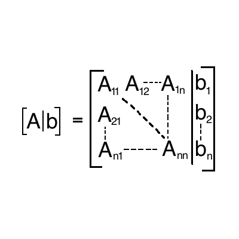

- Where
is a vector of unknowns,
is the coefficient matrix to the unknowns and
is a vector of constants
Numerical Methods in Engineering With Python 3
Written by Jaan Kiusalaas
Book Published: 2013
Physical Book (Amazon Link)
Augmented Coefficient Matrix
- The augmented coefficient matrix is a useful representation of the equations for computation purposes
|  |
Uniqueness of Solution
- A unique solution will result if the determinant of the A matrix is non-singular (
)
- Means that the rows and columns are linearly independent
- Example
(1)
(2)
- eqn (1) * 2 = eqn (2) therefore the equations are not linearly independent
- (example taken from book)
- A singular coefficient matrix results in infinite solutions or no solution
Ill Conditioning
- Ill conditioning occurs when the coefficient matrix is almost singular (
is very small)
- When the coefficient matrix is ill conditioned small changes in the coefficients result in large changes in the solutions
- This means that round off errors that coincide with numerical computation can have very large effects on the solution
- Example
- Case 1

- Case 2

- A small change in the y coefficient in the second equation resulted in a large change in the solution
- (example taken from book)
Euclidan Norm
Infinity Norm/Row-Sum Norm
Matrix Condition Number